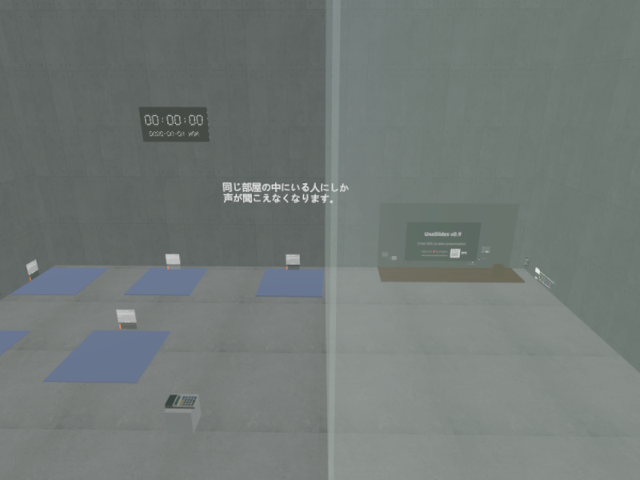

考案
開発期間: 8ヶ月
[企画・作成 / 未公開]
VRChat初 CTF（セキュリティ体験）ゲームワールド

【概要・規模】 VRChat上でセキュリティ知識をゲーム形式で学べる体験型ワールドを構想から一人で制作。全5ステージで構成され、参加者が協力して暗号を解く大型ゲームワールドです。
【担当範囲】 企画構想 / ワールドデザイン / 仕様書作成 / UIレイアウト / Quest軽量化調整
【CTF×VRChatの狙い】 UdonSharpを用いてセキュリティ問題をVRChat内の3Dパズル空間として再構築しました。
Unity 2022.3
VRChat SDK3
UdonSharp (C#)
Quest/PC Cross-platform